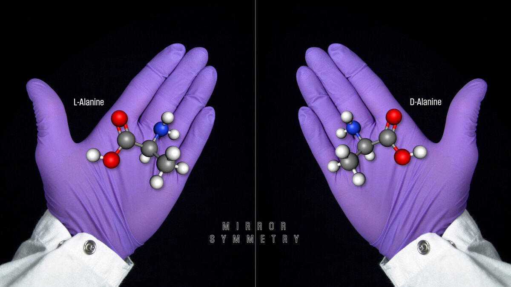
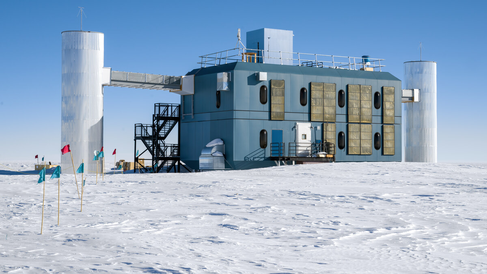

A hipótese de que o cérebro humano retém a capacidade de produzir novos neurônios ao longo de toda a idade adulta permanece como uma das controvérsias mais fascinantes e complexas da neurobiologia moderna. Em artigo de revisão publicado pela prestigiada revista científica Nature, pesquisadores revisitaram uma série de experimentos recentes que chegaram a conclusões antagônicas a respeito da neurogênese no giro denteado do hipocampo.
Por décadas, acreditava-se que os seres humanos nasciam com uma dotação neural estática e que a perda de células cerebrais era irreversível. Enquanto modelos animais em roedores e primatas não humanos demonstram neurogênese adulta contínua de maneira robusta, a verificação desse fenômeno em tecido cerebral humano maduro enfrenta obstáculos técnicos severos. As evidências frequentemente dependem de marcadores proteicos indiretos, como a dupla-cortina (DCX), que podem se degradar rapidamente após a morte ou ser expressos por outros tipos celulares.
Estudos que utilizaram técnicas inovadoras de sequenciamento genético de núcleo único (snRNA-seq) apresentaram resultados conflitantes: alguns laboratórios identificaram populações de precursores neurais em indivíduos idosos, enquanto equipes independentes não encontraram assinaturas moleculares conclusivas de células recém-geradas.
Esclarecer essa questão é crucial para o entendimento da plasticidade sináptica, consolidação da memória e potenciais terapias regenerativas contra doenças neurodegenerativas como o Alzheimer. A conclusão científica responsável no presente momento é de prudência: a neurogênese adulta humana não é uma certeza comprovada nem uma impossibilidade biológica descartada, exigindo métodos diagnósticos ainda mais precisos e padronizados.
🔗 Fontes e Referências Oficiais Consultadas
🧭 Outras Notícias Recentes
Acompanhe outros acontecimentos e descobertas verificadas no portal.

CIÊNCIANobel de Química premia pesquisas pioneiras sobre quiralidade e moléculas espelhadas
Henri Kagan e Kenso Soai são laureados por desvendar como reações químicas podem favorecer uma entre duas formas simétricas de uma mesma molécula.
Ler notícia
CIÊNCIADetector no gelo da Antártida revela partículas cósmicas e rende Nobel de Física a Francis Halzen
O observatório IceCube, com sensores a 2.500 metros sob a calota polar do Polo Sul, captura neutrinos de alta energia de regiões extremas do Universo.
Ler notícia TECNOLOGIA
TECNOLOGIA
Microsoft apresenta o chip de IA Maia 300 e planeja expansão em escala para 2027
O Maia 300 foi projetado para executar tarefas pesadas de inteligência artificial e auxiliar a Microsoft a ampliar sua eficiência em data centers.
Ler notícia